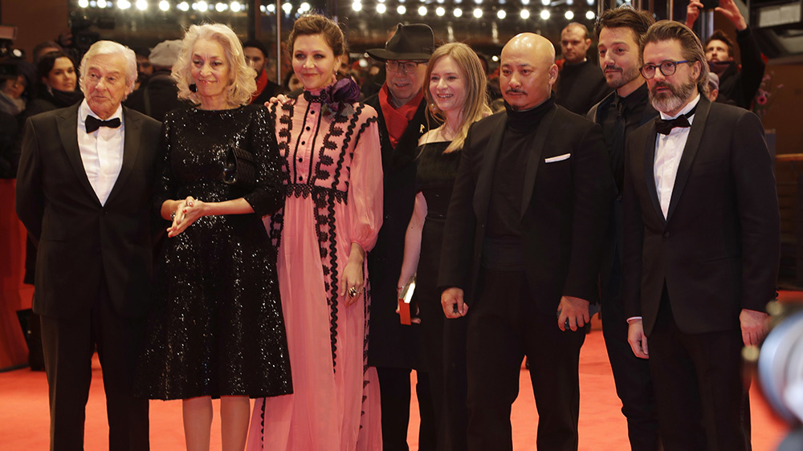

The Berlin International Film Festival (German: Internationale Filmfestspiele Berlin), usually called the Berlinale, is a film festival held annually in Berlin, Germany.[1] Founded in West Berlin in 1951,[2] the festival has been held every February since 1978 and is one of the "Big Three" alongside the Venice Film Festival and Cannes Film Festival.
With around 300,000 tickets sold and 500,000 admissions each year, it has the largest public attendance of any annual film festival.[3] Up to 400 films are shown in several sections across cinematic genres. Around twenty films compete for the festival's top awards, called the Golden Bear and several Silver Bears. Since 2001 the director of the festival has been Dieter Kosslick.
The European Film Market (EFM), a film trade fair held simultaneously to the Berlinale, is a major industry meeting for the international film circuit.[5] The trade fair serves distributors, film buyers, producers, financiers and co-production agents. The Berlinale Talents, a week-long series of lectures and workshops, is a gathering of young filmmakers held in partnership with the festival.[6]